Discord Bot
July 2023 - Present
3D Graphics Project
CPS-511 (Computer Graphics) | Fall 2023
E-Commerce Website
CPS-630 (Web Applications) | Winter 2025
Unity Game
RTA-867 (Game Engines) | Fall 2024
Overview
Facial Emotion Recognition (FER) uses computational methods to examine and classify human emotions based on facial expressions. The project aims to develop an advanced FER application using machine learning techniques, specifically, Convolutional Neural Networks (CNNs), to identify seven distinct emotions: anger, disgust, fear, happy, sad, surprise, and neutral. The objective was to evaluate the performance of the CNN-based approach in recognizing emotions under various circumstances. The model was tested using local system environments as well as Google Colab, achieving an accuracy of 62.71%. Despite challenges such as dataset imbalance and computational limitations, these results demonstrate the potential of deep learning in emotion recognition tasks, though further tuning and refinement are needed to improve the model’s effectiveness.
Dataset
The FER-2013 dataset was used to train our CNN. The dataset consists of two main folders, one for testing and one for training. The training dataset consists of 28709 examples used to train the model to identify emotions from the following seven facial expressions: anger, disgust, fear, happy, sad, surprise, and neutral. However, each emotion in the dataset has varying amounts of data. Anger contains 3589 photos, disgust has 436, fear has 4097, happiness has 7215, neutral has 4965, sad has 4830, and surprise has 3171. The test data contains 3589 examples that are used to test the model. Collectively, the selected dataset has 56.51 MB of data. Each data sample in the FER-2013 dataset is grayscale and the images' dimensionality is 48x48. This simplifies the data preprocessing step and ensures that our model can consistently learn and differentiate between emotions. Likewise, each data sample is variably unique due to the lighting, facial obstructions, and viewing angles, enabling the model to improve its generalizability. Examples of each emotion:
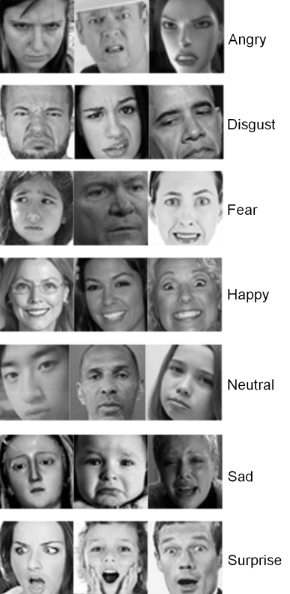
Results
At the end of the project 2 models were produced with performance around 60-65% accuracy.
Demo video made by a member of the project is available at: Emotion Detection Program
Confusion Matrices:
Local Machine:
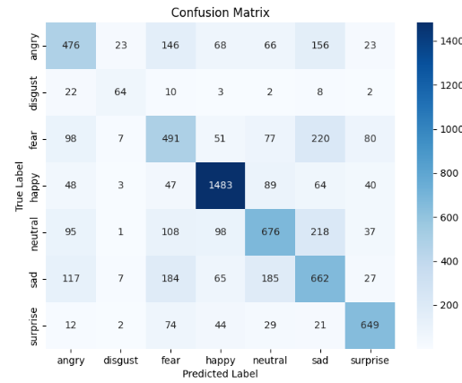
Google Colab:
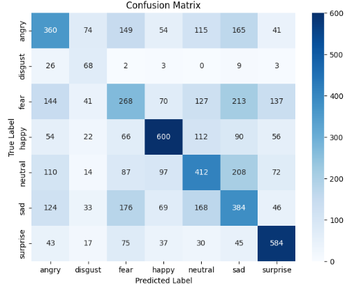
Classification Report:
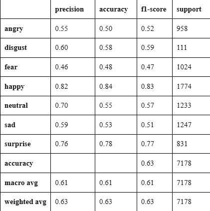
Overview
The Silverlight discord bot, is an application made in Python that interacts with Discord's api.
Some of the functionalities include: games like TicTacToe and Hangman, prototype poem N-gram model made using TensorFlow,
and reading information/activities from users in the server.
Examples:
Typing sl-info [name] will make the bot look for the user specified. If found on the server, the bot will read all the available information about the user and return it in a readable form.
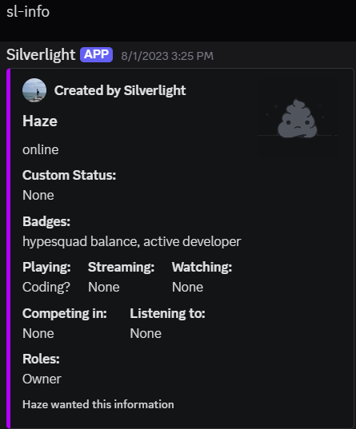
Typing sl-song [name] will make the bot look for the user specified. If no name is specified, the the bot will look at your information instead. If found on the server, the bot will see if the user is listening to a song. If they are, it will display information about the song and allow the user to listen along.
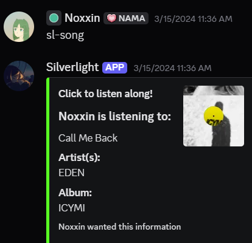
Using the hangman command will start a game of hangman using a list of 57,521 possible words.
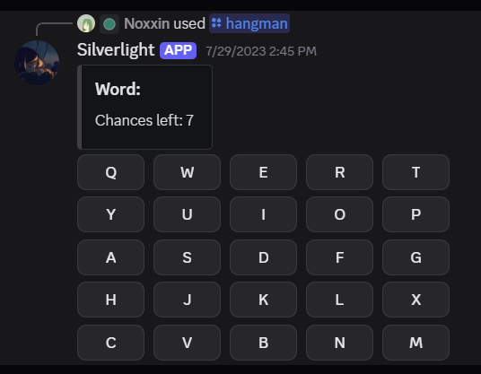
Overview
This C++ application showcases a 3D zeppelin simulation built using OpenGL and supporting libraries. This blimp is freely pilotable in all directions with a third person view by default. A computer controlled opponent roams the space and will open fire when you enter its attack radius. Switching to first person view transforms the camera into a cockpit style perspective, complete with a targeting reticle that lets you aim and fire back at the enemy.
Implementation Details
A demo video is available here: Demo test
The blimps were made with simple OpenGL shapes, and are drawn using the following matrix math:
glPushMatrix() [saves the current transformation matrix]-> glTranslatef(x,y,z) [applies translation movement]-> glRoatef(angle,x,y,z) [applies rotation around a specified axis]-> glScalef(x,y,z) [applies scaling]-> specific shape is drawn and then modified be the prior function calls -> glPopMatrix() [restores the previous transformation matrix]
Camera movement:
The cameras position is calculated using spherical coordinates that are defined by a radius and two angles.
These are then converted into Cartesian coordinates. This helps the camera orbit smoothly around the blimp in third person and allows for smooth aim in first person.
The conversion follows this formula:
camZ = radius * cos(t_thi) * cos(t_theta);
camX = radius * cos(t_thi) * sin(t_theta);
camY = radius * sin(t_thi);
These angles are then capped to -89 < t_thi * 180 / 3.1415 < 89 in third person and -89 < t_thi * 180 / 3.1415 <= 44 for first person
If the new proposed angle is out of bounds it is then capped to prevent unnatural flipping.
×

Overview
In this project, my group and I developed an E-Commerce website using a SPA approach. This website allowed users to make accounts,
order items, leave reviews, and ship orders. The front end was programmed with HTML, CSS, and JavaScript.
The backend was programmed in PHP, and mySQL was used for the database.
For this project I was responsible for the following:
SPA architecture, home page, shopping page, reviews, and the database schema.
Home Page
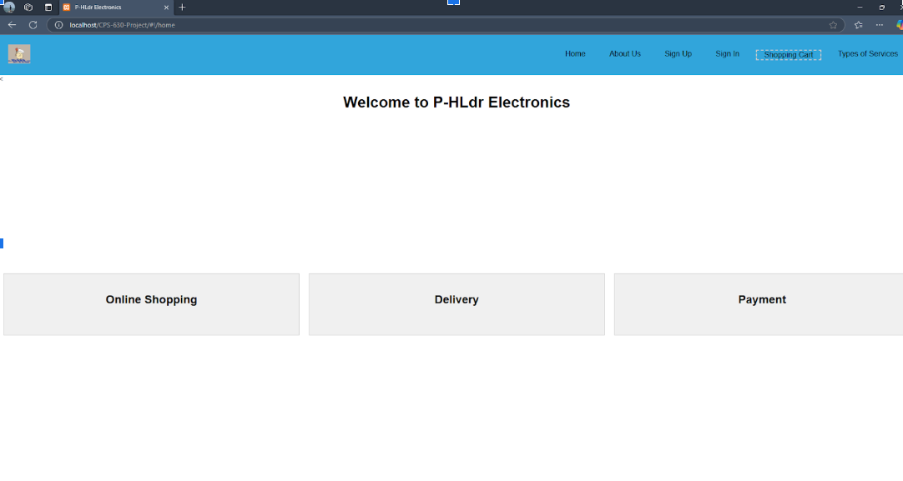
Shopping Page
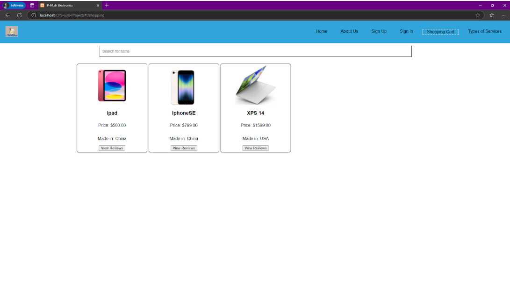
On the shopping page, users can search for products by entering keywords into the search bar.
This search is handled entirely on the client side. It filters the items already displayed on the page without querying the database.
Products that do not match the search term are hidden from view, allowing users to quickly locate relevant items.
To access shopping features such as adding items to the cart, users must be logged in. If a user attempts to interact with these features without being authenticated,
they are redirected to the login or signup page.
Adding items to the cart is done via a drag-and-drop interface.
Users drag the desired product into the shopping cart tab, which sends a request to the backend to retrieve the current state of the user's cart.
If the item already exists in the cart, its quantity is incremented by one. If not, the system attempts to add the item.
The backend will respond with a JSON object indicated the result:
{success: true, "message": "Item added to cart successfully!"}
or
{success: false,"message": "Failed to add item to cart."}
Upon clicking the view reviews button, the user will be shown the reviews for the item and given the option of writing their own review (see below).
Reviews
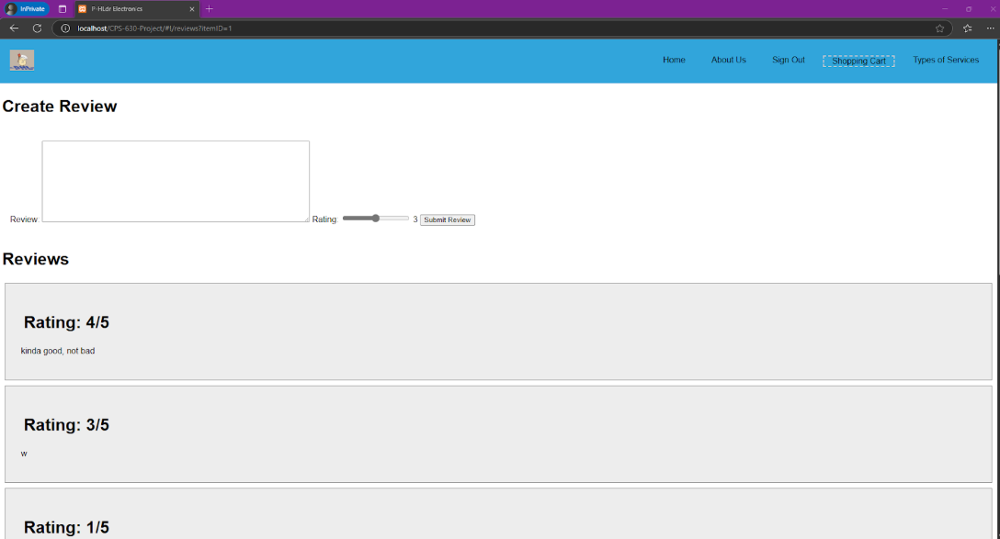
Once the request is made to the back end, the database will return the reviews for the item in JSON format along with a success flag. If the item ID is missing from the request, a success => false is returned instead. Upon success, the reviews are then stored in the current scope and looped through so they can be displayed on screen. The reviews functionality is also used for the reviews of the company as well. In this case, the item ID in the request is set to 0, which is reserved for company wide reviews and is not used by an actual product. These reviews can be made and accessed on the Types of Services page.
Database schema
Click image to enlarge
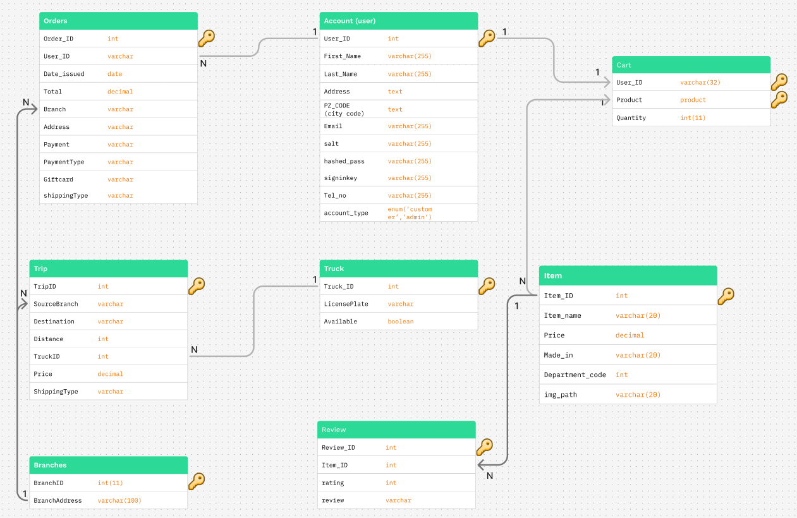
Overview
This project explores the basics of 3d Unity game development.
The game includes custom camera control scripts, custom movement scripts,
animations using Unity’s animation controller, and a custom map made using Unity shapes.
While the game is quite barren, it serves as a prototype for a game that takes heavy inspiration for the Maze Runner series.
More details and a demo of the game is available on the games page on Itch.io.
More details here